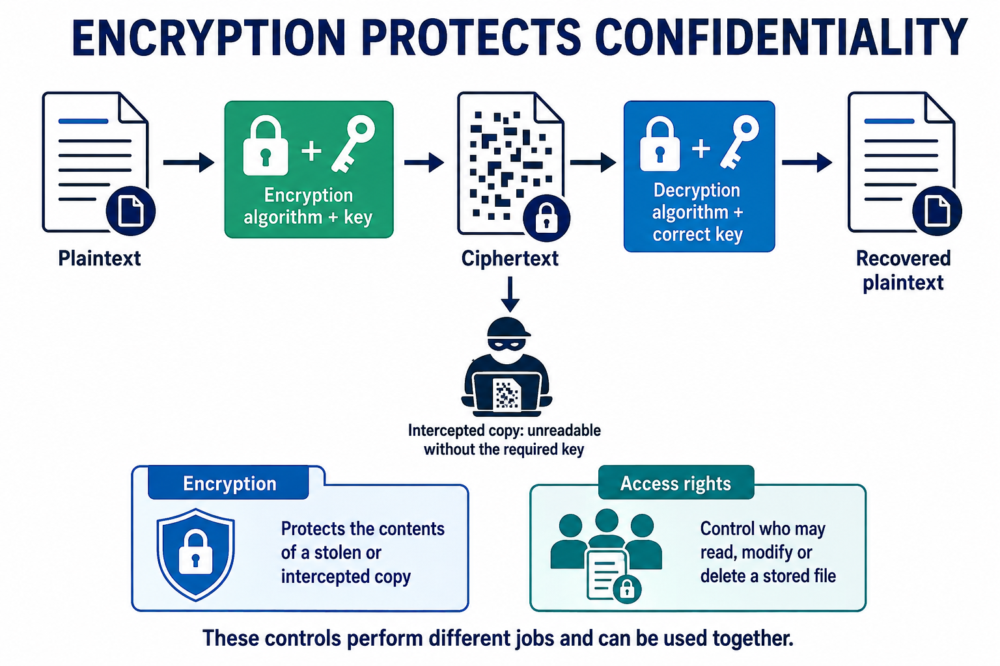

Encryption and decryption
Visual overview
From readable data to a protected copy

Visual transcript
- Follow all five stages from plaintext to recovered plaintext.
- The branch under ciphertext represents an intercepted copy.
Core explanation
Encryption applies an algorithm and key to plaintext, producing ciphertext. Decryption applies the corresponding algorithm and correct key to recover the original readable information. An intercepted or stolen encrypted copy should be unintelligible to someone without the required key.
Protect the key separately from the encrypted copy. Encryption does not decide which logged-in user may edit a record, prevent deletion of ciphertext, or prove that the source data was true. Its main role here is confidentiality.
Worked example · An encrypted archive on a lost drive
- Stored copy
An employee exports an encrypted archive, keeping its decryption key separately.
- Drive lost
The finder has the ciphertext but not the correct key, so cannot normally read the archive.
- Remaining risk
The finder can still erase the drive; another recoverable copy is needed for availability.
- Key also disclosed
If the required key is later disclosed, the confidentiality protection of that copy is lost.